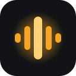
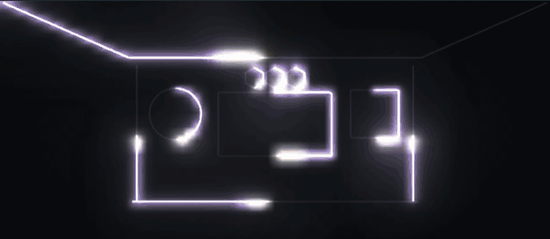
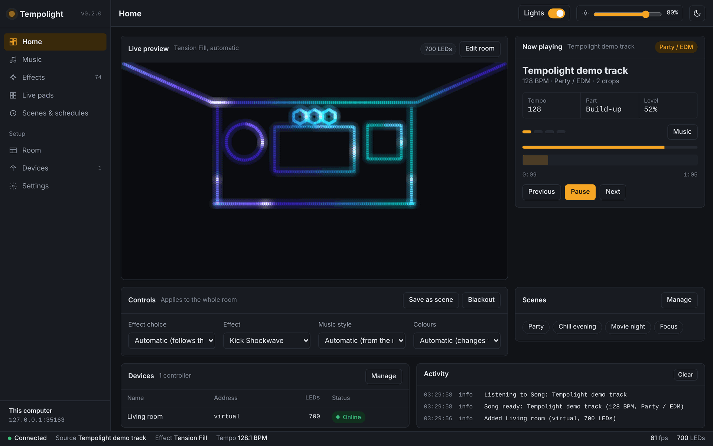
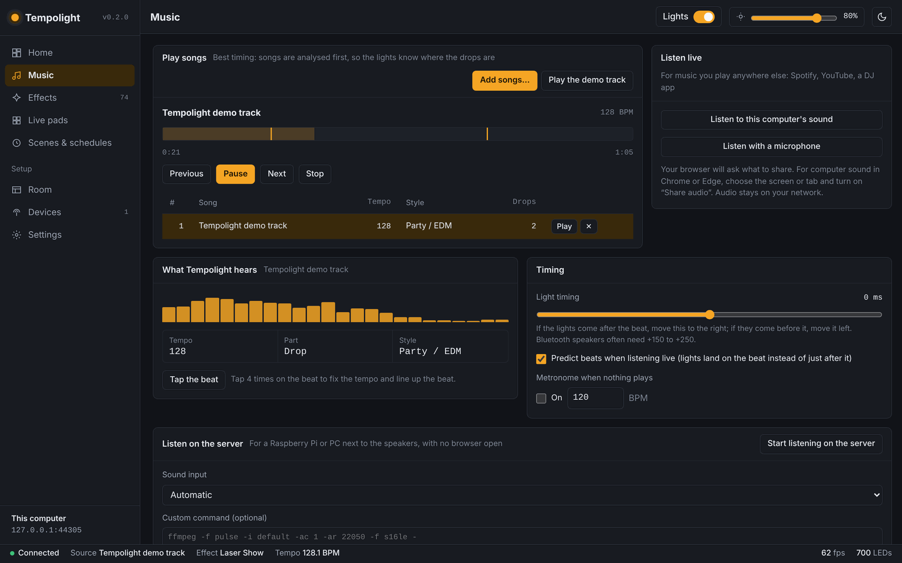
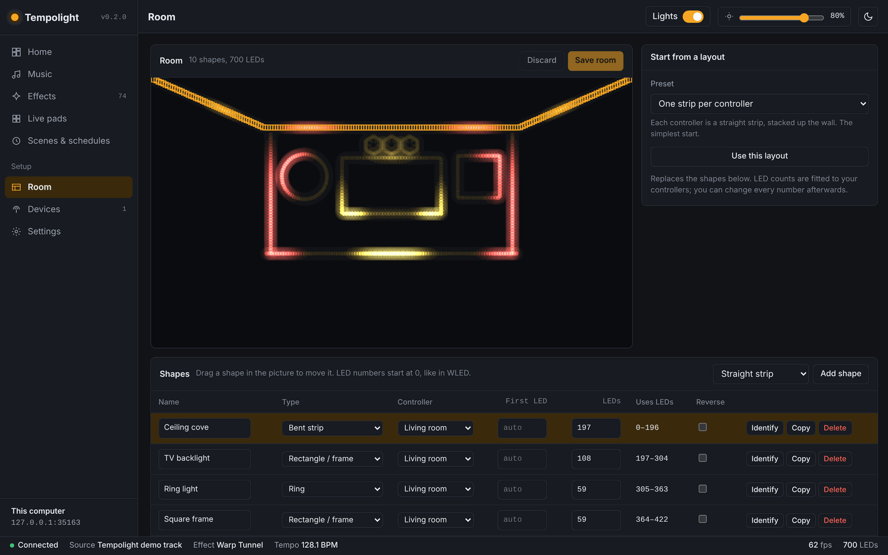
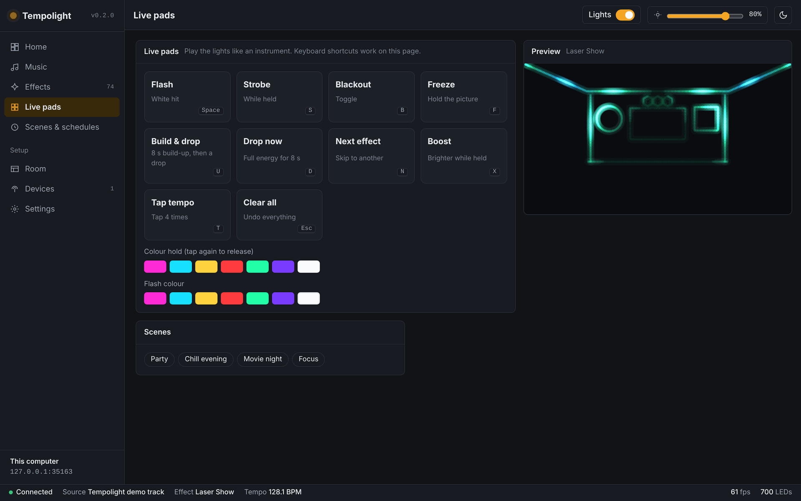

TempolightTempolight is free, open-source music-reactive lighting for WLED. It finds the beat, the build-ups and the drops, and turns every LED in your room into one light show.

Tempo, beat grid, bars, build-ups and drops, analysed before the song plays, so the room hits the drop exactly.
Spotify, YouTube or a DJ app through your computer's sound, a microphone, or a sound card on a Raspberry Pi.
Party, pop/rock, hip-hop, chill and ballads each get their own effects. Quiet songs never turn the room dark.
Strips, rings, TV frames, poles, hexagon panels and matrices, all one canvas. Effects travel across the room.
Flash, strobe, blackout, build & drop and more from your phone or keyboard. Play the lights like an instrument.
Finds WLED controllers by itself. Scenes, schedules, a PIN lock for parties, OSC and an HTTP API.
curl -fsSL https://raw.githubusercontent.com/D4RKGEEK/tempolight/main/install/install.sh | sh tempolight --openRaspberry Pi, start at boot
curl -fsSL https://raw.githubusercontent.com/D4RKGEEK/tempolight/main/install/install.sh | sh -s -- --service
irm https://raw.githubusercontent.com/D4RKGEEK/tempolight/main/install/install.ps1 | iexDocker or from source
git clone https://github.com/D4RKGEEK/tempolight.git cd tempolight npm start # or: docker compose up -d
Needs only Node.js 20+ (the installers set it up). No Python, no native libraries, no build step. Works with stock WLED on ESP8266 and ESP32.



